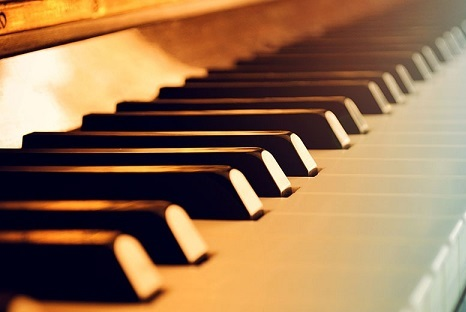

Home Guitar Lute Cello Piano Training

The piano is an acoustic, stringed musical instrument invented in Italy by Bartolomeo Cristofori around the year 1700 (the exact year is uncertain), in which the strings are struck by wooden hammers that are coated with a softer material (modern hammers are covered with dense wool felt; some early pianos used leather).
It is played using a keyboard, which is a row of keys (small levers) that the performer presses down or strikes with the fingers and thumbs of both hands to cause the hammers to strike the strings.
The word piano is a shortened form of pianoforte, the Italian term for the early 1700s versions of the instrument, which in turn derives from gravicembalo col piano e forte(key cymbal with quieter and louder)and fortepiano. The Italian musical terms piano and forte indicate "soft" and "loud" respectively, in this context referring to the variations in volume i.e,loudness produced in response to a pianist's touch or pressure on the keys: the greater the velocity of a key press, the greater the force of the hammer hitting the strings, and the louder the sound of the note produced and the stronger the attack.